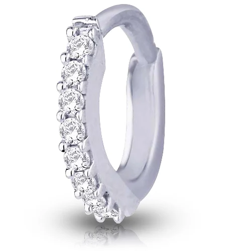

About Nose Rings
These small yet elegant pieces add instant grace to any face. From bridal nose pins to modern septum rings, we offer a complete variety in fashion nose jewelry.
Key Features
- Material: Alloy, oxidized silver, brass, and beads
- Designs: Studs, hoops, floral, spiral, crescent
- Styles: Clip-on (non-pierced) and pierced variants
- Finish: Matte, enamel, antique, gold-tone
Applications
- Perfect for weddings, cultural functions, and casual use
- Trending among teens, brides, and boho influencers
- Hot-selling item for flea markets and fashion kits
Why Choose JontyMart?
- Export-ready with fast-moving designs
- Safe for sensitive skin, nickel-free options
- Custom logo tagging and export support
- Affordable rates and attractive packaging
Care Instructions
Wipe gently with dry cloth after use. Store in individual pouches. Avoid contact with water or cosmetics for lasting shine.